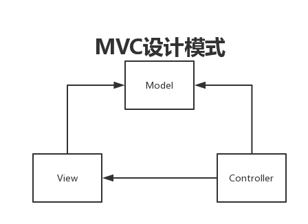
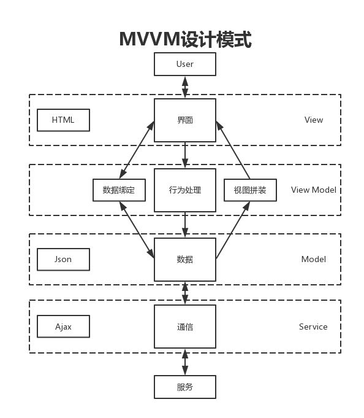

近几年，与前端相关的技术变革的很快，从Ajax技术的兴起，到现在比较流行的三大前端框架(Angular.js、react.js、vue.js)，从MVC到MVVM到设计模式，前端的技术与思想有了革命性的发展。
近期在整理技术栈时，觉得这个方法是一套成熟的开发模式，虽然可能有点过时，但是还是整理出来分享给大家，相互间学习。
1 设计模式
1.1 MVC
MVC设计模式是指模型—视图—控制器三层的设计框架，Model主要进行数据的操作，View主要完成UI界面的绘制和与用户的交互，Controller主要是从视图里面读取数据，并像模型发送数据写入到数据库。

mvc设计模式是最常见的设计模式，在这不进行说明，在下面的MVVM章节针对这个开发模式进行详细的说明。
1.2 MVVM
MVVM（Model-View-ViewModel)是在MVC(Model-View-Control)模式之后引出的新的开发模式，他与MVC模式一样用于把视图（界面）和数据进行解耦，不同的是采用ViewModel来完成数据与视图的双向绑定，通过自动化的方式承担大部分数据工作，来解决由于界面复杂化和快速迭代带来的问题。

MVVM是MVC设计模式的升级，更多的是前端来提MVVM的设计模式的一个概念，前端通过Ajax技术来获取数据。API提供的数据的Json的格式，然后通过Model模块将数据进行解析，ViewModel将View与Model进行绑定，用户访问View。
后端还是会采用传统的MVC的设计模式，API提供Json数据格式的数据。同时在该开发流程中，页面的路由和API的路由都是通过后端来控制的，这跟目前比较流行的前端路由存在着差别。
2 后端
2.1 Web框架
在这个开发模式中，使用的Web框架为Fatfree，这是一个轻量的Web框架，但是提供的功能比较齐全。包括了路由模块，数据库模块，支持多种数据库，包括Mysql，Sqlite，MongoDB等等。
2.1.1 路由
Fatfree有两种路由的写法，一种是写到配置文件，一种是直接写到程序的入口函数中。
1 | $f3 = require('path/to/base.php'); |
这个程序是一个最基本的Hello World的程序，就是将路由写到了程序入口的函数中。通过GET的方法来请求／路由，得到一个’hello,world!’的界面。
还有一种通过配置文件的方式来定义路由：
1 | $f3->config('app/config/routes.ini'); |
然后在配置文件添加路由：
1 | [routes] |
通过GET的方法来请求/路由，通过IndexController类里面的index方法来返回结果。
2.1.2 数据库
对象关系映射（英语：(Object Relational Mapping，简称ORM，或O/RM，或O/R mapping），是一种程序技术，用于实现面向对象编程语言里不同类型系统的数据之间的转换[1] 。从效果上说，它其实是创建了一个可在编程语言里使用的–“虚拟对象数据库”。
fatfree提供了\DB\SQL\Mapper的ORM类，里面包含了数据库基本的增删改查，能够提供基本的功能。
链接数据库：
1 | $mapper = new \DB\SQL\Mapper(\DB\SQL $db, string $table [, array|string $fields = NULL [, int $ttl = 60 ]] ) |
如果你想把其写成Model库，可以按照下面的方法写：
1 | $f3->set('DB',new DB\SQL('sqlite:db/database.sqlite')); |
查寻数据：
1 | //load()方法 |
添加数据或修改数据：
1 | $user = new User(); |
删除数据：
1 | $user = new User(); |
2.1.3 PHP包管理工具
Composer 是 PHP5.3以上 的一个依赖管理工具。它允许你申明项目所依赖的代码库，它会在你的项目中为你安装他们。Composer 不是一个包管理器。是的，它涉及 “packages” 和 “libraries”，但它在每个项目的基础上进行管理，在你项目的某个目录中（例如 vendor）进行安装。默认情况下它不会在全局安装任何东西。因此，这仅仅是一个依赖管理。
Composer的具体安装和使用在这里就不做具体的说明了，需要学习的话网上有很多的教程。
composer.json可以如下进行配置：
1 | { |
里面的Phinx是数据库迁移的工具，fatfree是我们使用的web框架。
1 | composer没有全局安装 |
安装成功后会自动生成vendor目录，文件目录的组织方式是vendor／项目所有人名／项目名。例如：vendor/robmorgan/phinx。
2.1.4 数据库迁移工具
数据库迁移工具的目的主要是使得开发人员在开发环境和线上环境进行统一，减少了程序员手动对数据库进行修改。
在这个开发模式中，我们选择了Phinx作为数据库迁移的工具。通过composer我们已经把phinx安装成功了。
1 | 初始化项目，会在文件中添加一个db/migrations文件夹 |
添加表
1 | php vendor/bin/phinx create MyNewMigration |
执行上面的命令会在生成的文件目录下面新建一个YYYYMMDDHHMMSS_my_new_migration.php文件。
1 |
|
生成的文件中可以包含三个方法，一个是新建，一个是修改，一个是删除。方法里面可以使用ORM的方法，但是也可以写SQL语句。
命令：
1 | 迁移 |
配置：
在init后，phinx在生成目录的时间同时也会生成一个phinx.yml文件，里面可以把数据库的配置文件写到里面。
1 | paths: |